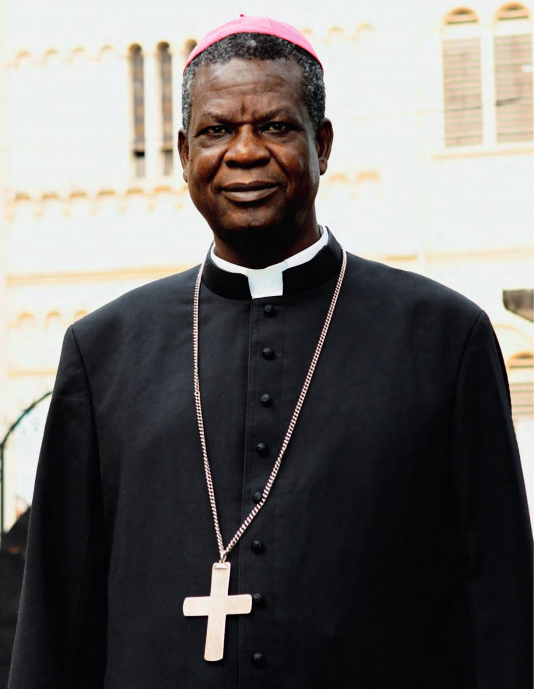

Mgr Samuel KLEDA
Archevêque Métropolitain de DoualaUn moment historique pour notre communauté diocésaine. Nous célébrons sept décennies de foi et les anniversaires d'ordination de notre Archevêque.
25 ANS
Jubilé d'Argent
(Épiscopat)
(Épiscopat)
40 ANS
Jubilé d'Émeraude
(Sacerdoce)
(Sacerdoce)
Jours avant la célébration
0
Célébration diffusée en direct par :